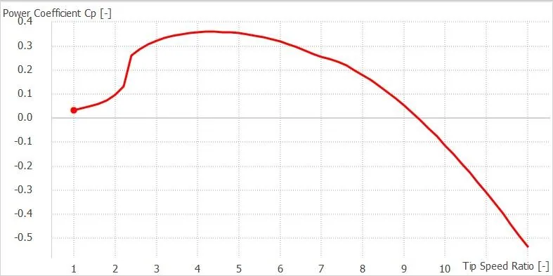

Marine Renewable Energy & Turbomachinery · Fluid Track
Hydrodynamic Design and Performance Analysis of a Horizontal-Axis Marine Current Turbine
Hydraulic Turbines · University of Tehran
View Full Report (PDF)Download PDF
Project Overview
A hydrodynamic rotor design for harnessing marine currents, formulated using blade-element momentum theory. Blade layout calculations were combined with CAD models and QBlade performance evaluations.
Engineering tools and methods: MATLAB, SolidWorks, QBlade.
Methodology
Modeling and formulation
Computed preliminary turbine sizing and design operating conditions using MATLAB.
Numerical implementation
Applied Blade Element Momentum Theory to establish blade geometry and performance parameters.
Analysis and comparison
Developed a three-dimensional rotor geometry in SolidWorks.
Interpretation and reporting
Compared predicted performance characteristics in QBlade.
Selected Findings and Scope
| Item | Reported result or scope |
|---|---|
| Calculated mechanical power | 236.8 kW under the reported design conditions. |
| Power coefficient | Cₚ = 0.4144. |
| Rotor diameter | 20.76 m. |
| Rotational speed | 6.89 rpm. |
The findings above reproduce values and limits stated in the submitted project report. They are reported numerical or design outputs unless explicitly noted otherwise; the full PDF should be consulted for model assumptions and details.
Figures from the Report


Complete Course Project Report
The full 19-page report includes the original technical formulation, calculations, figures, results and the references provided with the submitted course project.
Open Full Report (PDF)Download PDF
The public project copy has text-searchable student registration numbers removed where present; scientific content has not been rewritten.